<!DOCTYPE html>
<html lang="en">
  <head>
    <meta charset="utf-8" />
    <meta name="viewport" content="width=device-width, initial-scale=1.0, maximum-scale=1.0, user-scalable=no" />

    <title>Mott-squeezed states in the Fermi-Hubbard model driven by atom-light coupling</title>
    <link rel="shortcut icon" href="./favicon.ico" />
    <link rel="stylesheet" href="./dist/reset.css" />
    <link rel="stylesheet" href="./dist/reveal.css" />
    <link rel="stylesheet" href="./dist/theme/white.css" id="theme" />
    <link rel="stylesheet" href="./css/highlight/zenburn.css" />


  </head>
  <body>
    <div class="reveal">
      <div class="slides"><section  data-markdown><script type="text/template">

<!-- ### One- and two-axis squeezing via laser coupling in an atomic Fermi-Hubbard model -->
### Mott-squeezed states in the Fermi-Hubbard model driven by atom-light coupling

Tanausú Hernández Yanes

Institute of Physics of the Polish Academy of Science 

<a href="https://journals.aps.org/prl/abstract/10.1103/PhysRevLett.129.090403">PhysRevLett.129.090403</a>


<aside class="notes"><p>Some quick sentence about what OAT, TACT and squeezing means as an intro.</p>
</aside></script></section><section  data-markdown><script type="text/template">
### The team


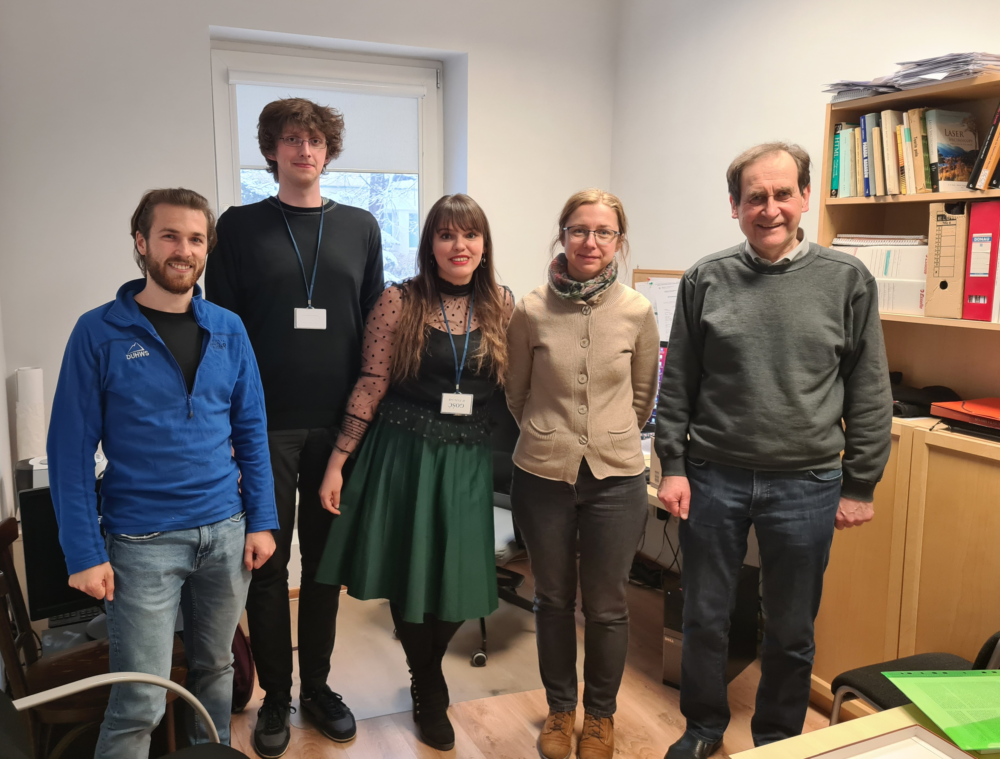

<table style="width:100%; font-size:.5em;">
<tr>
	<td height=10>
	T. Hernández Yanes
	</td>
	<td>
	G. Žlabys
	</td>
	<td>
	M. Mackoit Sinkevičienė
	</td>
	<td>
	E. Witkowska
	</td>
	<td>
	G. Juzeliūnas
	</td>
	<td>
	M. Plodzień
	</td>
</tr>
<tr>
	<td height=50 align="center">

	</td>
	<td height=50 align="center">

	</td>
	<td height=50 align="center">

	</td>
	<td height=50 align="center">

	</td>
	<td height=50 align="center">

	</td>
	<td height=50 align="center">

	</td>
</tr>
</table>

</script></section><section  data-markdown><script type="text/template">### Quantum Correlations and Precision

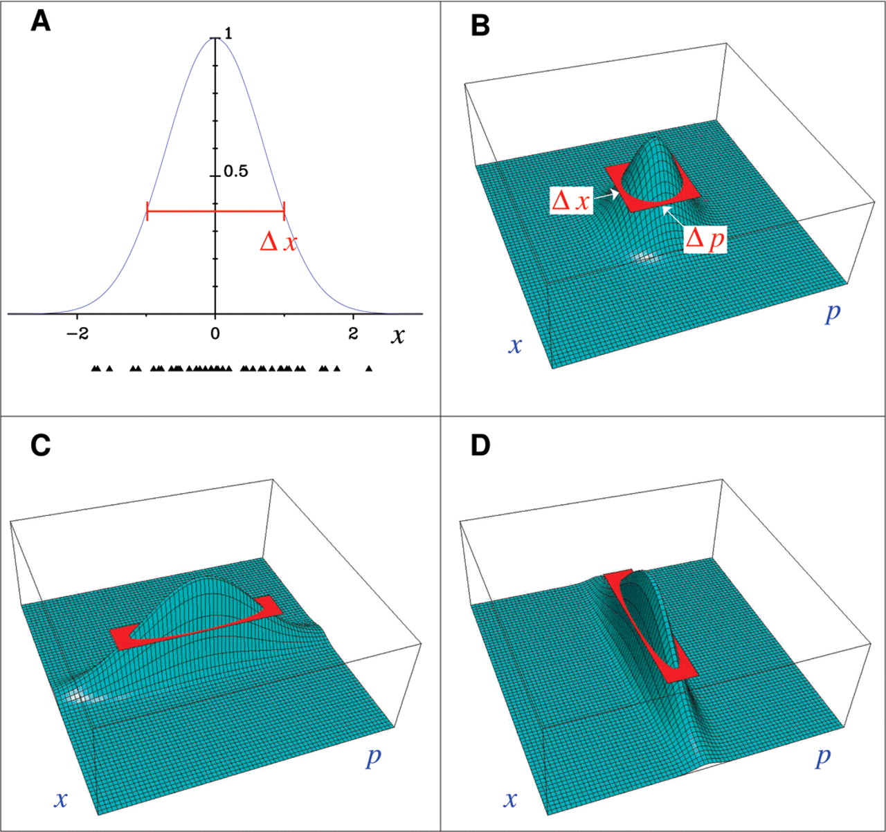

`$\left(\Delta J_x\right)^2 \left(\Delta J_y\right)^2 \ge \frac{1}{4} \left|\left< [J_x, J_y] \right>\right|^2 = \frac{1}{4}\left|\left< J_z \right>\right|^2,$`

$\Delta\phi_\mathrm{SQL} = \frac{1}{\sqrt{N}};\ \Delta\phi_\mathrm{HL} = \frac{1}{N}.$

<aside class="notes"><ul>
<li>A figure about coherent states and squeezed states and relation to Heisenberg uncertainty principle</li>
<li>Show Standard Quantum Limit (from central limit theorem)</li>
<li>Show Heisenberg Limit (from uncertainty prin.)</li>
</ul>
</aside></script></section><section  data-markdown><script type="text/template">### Pseudo-spin from two-level system

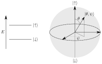

`$$\hat{S}_\alpha = \frac{1}{2}\hat{\sigma}_\alpha$$`

<aside class="notes"><p>Explain this is a single spin op. and tensor product</p>
</aside></script></section><section  data-markdown><script type="text/template">### Collective Spin

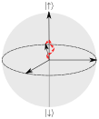

`$\hat{S}_\alpha = \sum_j\hat{S}^\alpha_j$`

`$\hat{S} = (\hat{S}_x, \hat{S}_y, \hat{S}_z) $`
</script></section><section  data-markdown><script type="text/template">### Coherent states

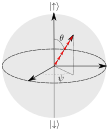

`$
\left|\theta, \phi \right> = e^{-i\hat{S}_z \phi} e^{-i \hat{S}_y \theta}\bigotimes_{j=1}^N\left|\uparrow\right>_j.
$`
</script></section><section  data-markdown><script type="text/template">### Dicke states 
`
\[
\left|\frac{N}{2}, \frac{N}{2}\right> = \bigotimes_{j=1}^N\left|\uparrow\right>_j.
\]
`

`
\[
\left|\frac{N}{2}, m\right> = A^-_{\frac{N}{2}, m} \left(\hat{S}^-\right)^{\frac{N}{2}-m}\left|\frac{N}{2}, \frac{N}{2} \right>.
\]
`

<aside class="notes"><p>Say Husimi distr. and other values of m</p>
</aside></script></section><section  data-markdown><script type="text/template">### Dicke states 
<table>
<tr>
	<th align='center'>$\left|\frac{N}{2}, \frac{N}{2}\right>$</th>
	<th align='center'>$\left|\frac{N}{2}, 0\right>$</th>
	<th align='center'>$\left|\frac{N}{2}, -\frac{N}{2}\right>$</th>
</tr>
<tr>
	<td>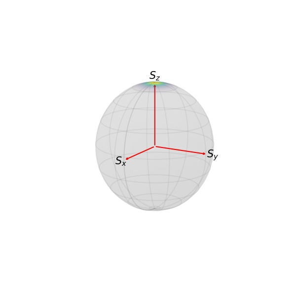</td>
	<td>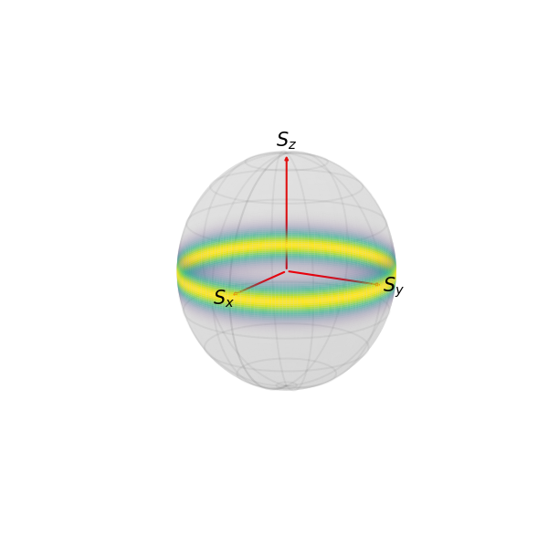</td>
	<td></td>
</tr>
</table>


<aside class="notes"><ul>
<li>Maximal total spin --&gt; More squeezing</li>
</ul>
</aside></script></section><section  data-markdown><script type="text/template">
### Spin-squeezing

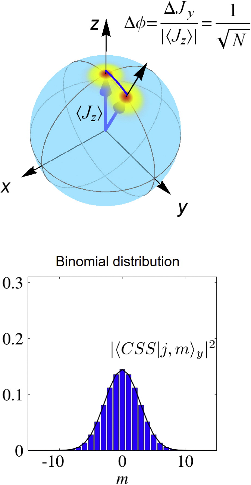

</script></section><section  data-markdown><script type="text/template">

### Spin-squeezing

<!--
`$\left(\Delta S_x\right)^2 \left(\Delta S_y\right)^2 \ge \frac{1}{4}\left|\left< S_z \right>\right|^2 = \frac{1}{4}\langle \hat{S} \rangle^2,$`

`$\left(\Delta \phi\right)^2 \left(\Delta S_\perp\right)^2 \ge \frac{1}{4}\langle \hat{S} \rangle^2.$`  
-->

<div class='r-stack'>
<div class='fragment fade-out'>

For a given state with mean spin direction along z `$(\left<S_x\right> \left<S_y\right> = 0 )$`, we rotate the state around `$S_x$` with angle $\phi$.

`$S_y^\mathrm{rot} = e^{i\phi S_x} S_y e^{-i\phi S_x} = \cos\phi S_y - \sin\phi S_z$`

From error propagation:

`$
\Delta\phi = \frac{\Delta S_y^\mathrm{rot}}{|\partial \left<S_y^\mathrm{rot}\right> / \partial \phi|}
$`

</div>
<div class='fragment current-visible'>

`$\Delta\phi = \frac{\sqrt{\cos^2\phi(\Delta S_{y})^2 +\sin^2\phi(\Delta S_{z})^2 - \frac{1}{2}\sin 2\phi(\left<[S_{y}, S_z]\right>}}{| \cos\phi \langle {S}_z \rangle |}$`

Assuming $\phi \sim 0$:

`$\Delta\phi = \frac{\Delta S_{y} }{| \langle {S}_z \rangle |}$`

In general:

`$\Delta\phi = \frac{(\Delta S_{\perp})_\mathrm{min} }{| \langle \vec{S} \rangle |}$`

</div>

<div class='fragment'>

`$$\xi^2_\mathrm{spin} = \left(\frac{\Delta\phi}{\Delta\phi_\mathrm{CSS}}\right)^2 = \frac{N\left(\Delta S_{\perp}\right)_\mathrm{min}^2 }{\langle \vec{S}\rangle^2}$$`

`$\Delta S_{\perp, \mathrm{min}}^2$`: Min. variance perp. to `$\vec{S}$`

`$\Delta \phi_\mathrm{CSS} = \frac{1}{\sqrt{N}}$`: Standard Quantum Limit

- [Jian Ma et al, Physics Reports 509, 2–3, (2011)](https://www.sciencedirect.com/science/article/pii/S0370157311002201)

<aside class="notes"><p>Descripition based on variances along the Bloch sphere. Implies correlations.
We use the Wineland definition were the origin of the parameter comes from Ramsey spectroscopy so it was focused on phase sensitivity rather than measuring correlations-entanglement like Kitagawa-Ueda&#39;s.<br>Introduce pseudo spin as the two level system. </p>
</div></aside></script></section><section  data-markdown><script type="text/template">### Ways to generate squeezing

- Transfer of squeezing from light to atoms; (Polzik, 1999, 2000; Pinard 2004),
- Interaction between atoms and light OAT model; atoms in a cavity (Vuletić 2010),
- QND (Bigelow 2000; Mabuci 2004; Polzik,Vuletić 2010)
- Interactions among atoms via OAT model (Treutlein, Oberthaler 2010; Chapman 2012)
</script></section><section  data-markdown><script type="text/template">### Dynamical generation of squeezed states

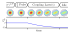

`$\left|\Psi(t)\right> = e^{-i\hat{H}t}\left|\Psi(0)\right>$`
</script></section><section  data-markdown><script type="text/template">### Example Hamiltonian: linear with spin operators


`$$\hat{H} = \vec{S}\cdot\vec{n}  = \sum_j (n_x\hat{S}_j^x+n_y\hat{S}_j^y+n_z\hat{S}_j^z)$$` 

`$$\left|\Psi(t)\right> = e^{-i\vec{S}\cdot\vec{n}t}\left|\Psi(0)\right> = R(\vec{n}, t)\left|\Psi(0)\right>$$`
</script></section><section  data-markdown><script type="text/template">### Example Hamiltonian: linear with spin operators
<video controls class='r-stretch'>
	<source data-src='video/Q function R, N=100, M=100, tf=5.0, chi=1, proj=hammer, mf_style=quiver.mp4' type="video/mp4" />
</video>


</script></section><section  data-markdown><script type="text/template">### Example Hamiltonian: One Axis Twisting

`$$\hat{H}_\mathrm{OAT} = \chi \hat{S}_z^2  = \chi \sum_i\sum_j \hat{S}^z_{i} \hat{S}^z_{j}$$` 
`$$e^{i \chi \hat{S}_z^2 t}\sum_m \left|S, m\right> =  \sum_m e^{i\chi m^2 t} \left|S, m\right> $$` 

`$\xi^2 \propto N^{-2/3}$`

<aside class="notes"><p>Cite Kitagawa-Ueda</p>
</aside></script></section><section  data-markdown><script type="text/template">### Example Hamiltonian: One Axis Twisting

<video controls class='r-stretch'>
	<source data-src='video/Q function OAT, N=100, M=100, tf=0.46, chi=1, proj=hammer, mf_style=quiver.mp4' type="video/mp4" />
</video>
</script></section><section  data-markdown><script type="text/template">### Example Hamiltonian: Two Axis Counter Twisting

`$\hat{H}_\mathrm{TACT} = \chi (\hat{S}_z^2-\hat{S}_x^2) $` 

`$\xi^2 \propto N^{-1}$`
</script></section><section  data-markdown><script type="text/template">### Example Hamiltonian: Two Axis Counter Twisting

<video controls class='r-stretch'>
	<source data-src='video/Q function TACT, N=100, M=100, tf=0.23, chi=1, proj=hammer, mf_style=quiver.mp4' type="video/mp4" />
</video>
</script></section><section  data-markdown><script type="text/template">### Experimental imperfections that diminish squeezing

- Particle losses during evolution. 
- Decoherence.

### 
### Current challenges

- Dynamical generation of spin squeezing in 'non-interacting' systems.
- TACT hasn't been obtained experimentally yet.
</script></section><section  data-markdown><script type="text/template">
### Fermi Hubbard Model

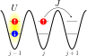

`$    \hat{H} = \sum_{j=1}^{M'} \hat{H}^{\text{tunnel}}_j +\sum_{j=1}^M \hat{H}^{\text{int}}_j 
$`
</script></section><section  data-markdown><script type="text/template">
### Fermi Hubbard Model

`$$
\begin{aligned}
    \hat{H} & = \sum_{j=1}^{M'} \hat{H}^{\text{tunnel}}_j  +
    \sum_{j=1}^M \hat{H}^{\text{int}}_j \\
    \hat{H}^\text{tunnel}_j & = -J \sum_{s= \uparrow,\downarrow}
   (\hat{a}^\dagger_{j,s} \hat{a}_{j+1,s} + \text{h.c.}), \\
   \hat{H}^{\text{int}}_j & = U \hat{n}_{j, \uparrow}\hat{n}_{j, \downarrow}, \\  
\end{aligned}
$$`
</script></section><section  data-markdown><script type="text/template">
### Mott insulating phase

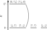

- [K. A. Chao, J. Spałek, and A. M. Oleś. J. Phys. C: Solid State Phys. 10 L271 (1977)](https://iopscience.iop.org/article/10.1088/0022-3719/10/10/002)

We can use perturbation theory to tackle this problem.
</script></section><section  data-markdown><script type="text/template">### A brief introduction to Schieffer-Wolff transformation

<ul>
<li class="fragment semi-fade-out"> Separate $H$ in diagonal and off-diagonal parts for a certain eigenbasis </li>
<p  class="fragment fade-in"> $H = H_0 + V$ </p>
<li class="fragment fade-in-then-semi-out">Define an unitary transf. for undefined operator $S$</li>
<p  class="fragment fade-in"> $U = e^{S} \rightarrow H' = e^{S}H e^{-S};\ \left|\Psi\right> = e^{-S}\left|\psi\right>$ </p>
<li class="fragment fade-in-then-semi-out">Expand using Baker-Campbell-Haussdorf formula</li>
<p  class="fragment fade-in">$H' = H + [S, H] + \frac{1}{2}[S,[S,H]] + \ldots $</p>
</ul></script></section><section  data-markdown><script type="text/template">### A brief introduction to Schieffer-Wolff transformation

`$H' = H_0 + \frac{1}{2}[S,V] + O(V^3)$` if we choose 

`$[H_0, S] = V \rightarrow (E_n-E_m)S_{nm} = V_{nm}$`

So if the perturbation doesn't couple degenerate energy levels:

`$
\begin{equation}
S_{nm}=\left\{ \begin{array}{c}
\frac{V_{nm}}{E_{n}-E_{m}}\,,\quad\mathrm{for}\quad E_{m}\ne E_{n}\\
0\,,\quad\quad\quad\,\mathrm{for}\quad E_{m}=E_{n}
\end{array}\right.
\end{equation}
$`
</script></section><section  data-markdown><script type="text/template">### A brief introduction to Schieffer-Wolff transformation 

`$
\begin{equation}
\tilde{H}_{nm}\approx E_{n}\delta_{nm}+\frac{1}{2}\sum_{l}\left(\frac{V_{nl}V_{lm}}{E_{n}-E_{l}}+\frac{V_{nl}V_{lm}}{E_{m}-E_{l}}\right)
\end{equation}
$`
with $E_{l}\ne E_{n},E_{m}$.

Implies $\Delta E \gg V_{nm}$
</script></section><section  data-markdown><script type="text/template">### Spin Exchange Hamiltonian 
`$$\hat{H}_\mathrm{FHM} \approx \sum_j^{M'} \hat{H}^{\rm SE}_j,$$` 

where 
`$$
\hat{H}^{\rm SE}_j =  
J_\text{SE}\left(
\hat{S}^x_{j} \hat{S}^x_{j+1} + \hat{S}^y_{j} \hat{S}^y_{j+1} + \hat{S}^z_{j} \hat{S}^z_{j+1} - \frac{1}{4}
\right).
$$`
</script></section><section  data-markdown><script type="text/template">### States in the Mott phase ($U >> J$)

Single occupation manifold &rarr; Dicke States

`
$
| \frac{N}{2}, m\rangle = A_{\frac{N}{2}, m}^- \left(\hat{S}_{-}\right)^{N/2-m}\bigotimes_{j=1}^N|\uparrow\rangle_j
$
`

`$\hat{H}_\mathrm{SE} \left|\frac{N}{2}, m\right> = E_0  \left|\frac{N}{2}, m\right>,$`

<span class='fragment highlight-red'>

`
	$$
	e^{i\hat{H}_\mathrm{SE}t} \left|\frac{N}{2}, m\right> = e^{i E_0 t} \left|\frac{N}{2}, m\right>.
	$$
`

<span class='fragment fade-in'>
No Squeezing!
</span>
</span>

<aside class="notes"><ul>
<li>Dicke states as eigenstates of the SE Hamiltonian</li>
<li>If no off-resonant laser, no dynamics!</li>
<li>Give teaser that we know it projects onto the spin wave states</li>
</ul>
</aside></script></section><section  data-markdown><script type="text/template">### Fermi Hubbard Model + Atom-Light Coupling

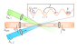

- [K. Mølmer and A. Sørensen, <!--*Multiparticle Entanglement of Hot Trapped Ions*, -->Phys. Rev. Lett. 82, 1835 (1999)](https://journals.aps.org/prl/abstract/10.1103/PhysRevLett.82.1835)
- [A. M. Rey et al. Phys. Rev. Lett. 116, 035301 (2016)](https://journals.aps.org/prl/abstract/10.1103/PhysRevLett.116.035301)

<!--Synthetic Spin-Orbit Coupling in an Optical Lattice Clock
Michael L. Wall, Andrew P. Koller, Shuming Li, Xibo Zhang, Nigel R. Cooper, Jun Ye, and Ana Maria Rey -->

<aside class="notes"><p>Atom-light coupling</p>
</aside></script></section><section  data-markdown><script type="text/template">### Fermi Hubbard Model + Atom-light Coupling

<!---->

`$$
\begin{aligned}
    \hat{H} &= \sum_{j=1}^{M'} \hat{H}^{\text{tunnel}}_j  +
    \sum_{j=1}^M \hat{H}^{\text{int}}_j +
    \sum_{j=1}^M \hat{H}^{\text{L}}_j,\\
    \hat{H}^{\text{L}}_j &= \frac{\Omega}{2} (e^{i  \phi j } \hat{a}^\dagger_{j,\uparrow}\hat{a}_{j,\downarrow} + e^{-i  \phi j }\hat{a}^\dagger_{j,\downarrow}\hat{a}_{j,\uparrow})\\
    			 &= \frac{\Omega}{2} (e^{i  \phi j } \hat{S}_{j}^{+} + e^{-i  \phi j }\hat{S}_{j}^{-}).
\end{aligned}
$$`

Light acts as a classical field (Raman coupling).

<aside class="notes"><ul>
<li>Panel a of fig1 of the paper</li>
<li>BHM explictly</li>
<li>SOC acting as a coupling between the internal states of the particles</li>
</ul>
</aside></script></section><section  data-markdown><script type="text/template">
### Energy levels on the rotated frame

`$
\begin{align}
\hat{H} 
&=  (\tilde{H}^{\mathrm{int}} + \tilde{H}^{\mathrm{L}}) + \tilde{H}^{\mathrm{tunnel}} \\ 
&=  (U\sum \tilde{n}_{j,\uparrow}\tilde{n}_{j,\downarrow} + \Omega\hat{J}_z) + \tilde{H}^{\mathrm{tunnel}} \\ 
&= \hat{H}_0 + \hat{V} 
\end{align}
$`

<table class='r-stretch'>
<td>
<th>
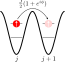
</th>
<th>
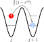
</th>
</td>
</table>
</script></section><section  data-markdown><script type="text/template">### Back to our model in the rotated frame

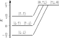

$U-\Omega \gg J \rightarrow U \gg J; U \gg \Omega$

<aside class="notes"><ul>
<li>Show the approximation constraint and stronger constraints imposed.</li>
<li>Final form of the Hamiltonian in the rotated frame</li>
<li>Our Hilbert space now is reduced to single occupied states</li>
</ul>
</aside></script></section><section  data-markdown><script type="text/template">### Spin Hamiltonian in the original frame
`$\hat{H}_{\rm spin} = \sum \hat{H}^{\rm SE}_j + \sum \hat{H}^{\uparrow\downarrow}_j$`<span  class="fragment semi-fade-out">`$+\sum \hat{H}_j^\mathrm{DM},$`</span>

`$$
\begin{align*}
 	\hat{H}^{\rm SE}_j & =  
 	  J_\text{SE}\left(
	\hat{S}^x_{j} \hat{S}^x_{j+1} + \hat{S}^y_{j} \hat{S}^y_{j+1} + \hat{S}^z_{j} \hat{S}^z_{j+1} - \frac{1}{4}
 	\right),\\
    \hat{H}^{\uparrow\downarrow}_j & =  \frac{J_{\uparrow\downarrow}}{2} 
  \left(e^{i \phi j} \hat{S}^+_{j} +  e^{-i \phi j} \hat{S}^-_{j}\right).
\end{align*}
$$`
</script></section><section  data-markdown><script type="text/template">### Spin Hamiltonian in the original frame
`$\hat{H}_{\rm spin} \approx \sum \hat{H}^{\rm SE}_j + \sum \hat{H}^{\uparrow\downarrow}_j,$`

`$$
\begin{align*}
 	\hat{H}^{\rm SE}_j & \approx  
 	  \frac{J^2}{4U}\left(
	\hat{S}^x_{j} \hat{S}^x_{j+1} + \hat{S}^y_{j} \hat{S}^y_{j+1} + \hat{S}^z_{j} \hat{S}^z_{j+1} - \frac{1}{4}
 	\right),\\
    \hat{H}^{\uparrow\downarrow}_j & \approx \frac{\Omega}{2} 
  \left(e^{i \phi j} \hat{S}^+_{j} +  e^{-i \phi j} \hat{S}^-_{j}\right).
\end{align*}
$$`
</script></section><section  data-markdown><script type="text/template">### States in the Mott phase ($U >> J$)

Single occupation manifold &rarr; Dicke States

`
$$
\left| \frac{N}{2}, m\right> = A_{\frac{N}{2}, m}^- \left(\hat{S}_{-}\right)^{N/2-m}\bigotimes_{j=1}^N\left|\uparrow\right>_j
$$
`
</script></section><section  data-markdown><script type="text/template">### Spin Hamiltonian and Dicke states

`
$$
\begin{align*}
\hat{H}_\mathrm{SE} \left|\frac{N}{2}, m\right> &= E_0  \left|\frac{N}{2}, m\right>,\\
\hat{H}_{\uparrow\downarrow} \left|\frac{N}{2}, m\right> &\propto \left|S', m'\right>?
\end{align*}
$$
`

<aside class="notes"><ul>
<li>Dicke states as eigenstates of the SE Hamiltonian</li>
<li>If no off-resonant laser, no dynamics!</li>
<li>Give teaser that we know it projects onto the spin wave states</li>
</ul>
</aside></script></section><section  data-markdown><script type="text/template">### Quick summary until now

- FHM
- SW approximation onto the single occupied states
- Spin model
- Change of basis to Dicke states
- Dicke diag. with $\hat{H}_ \mathrm{SE}$ 
but unknown to `${\hat{H}}_{\uparrow\downarrow}$`

</script></section><section  data-markdown><script type="text/template">### Spin Wave States

`
\[ \tilde{S}_q^\pm = \frac{1}{\sqrt{N}}\sum_j^N e^{\pm i q j} \hat{S}_j^\pm,\]
`

where

`
$q = \frac{2\pi}{N}n, \forall n \in [1, N-1]. $
`

Notice that:

`
$
\hat{H}_{\uparrow\downarrow} = \frac{J_{\uparrow\downarrow}}{2}\sqrt{N}\left( \tilde{S}_\phi^+ + \tilde{S}_\phi^- \right)
$
`
<!--
### Spin Wave States

<p style="font-size:.8em;">
\[
\left|q\right>^-
= \tilde{S}_q^- \left|\frac{N}{2}, \frac{N}{2}\right> 
= \frac{1}{\sqrt{N}}\sum_j^N e^{-iqj} \hat{S}^-_j\bigotimes_{j'}^N\left|\uparrow\right>_{j'} .
\]
\begin{align*}
	\hat{S}_z \left|q\right>^- &= \left(\frac{N}{2}-1\right)  \left|q\right>^- ,\\
	\hat{S}^2 \left|q\right>^- &= \frac{N}{2}\left(\frac{N}{2}  -  1 \right) \left|q\right>^- + N \delta_{q_n, 0} \left|q=0\right>.
\end{align*}
</p>
Notes:
- Definition of the spin operator in momentum space
- q state as application onto the Dicke state with max/min projection
- q state as eigenstate of Sz, S2
- literature only explicitly mentions the maximal projection case.

### Spin Wave States

Since $[\tilde{S}_q^\pm, \hat{S}^\pm] = 0$ 

`
\begin{align*}
\left|q, m'\right>^-
&= \tilde{S}_q^- \left|\frac{N}{2}, m\right> \\
&=  A^-_{\frac{N}{2}, m} \left(\hat{S}^-\right)^{\frac{N}{2}-m}\tilde{S}_q^-\left|\frac{N}{2}, \frac{N}{2}\right> \\
&=  A^-_{\frac{N}{2}, m} \left(\hat{S}^-\right)^{\frac{N}{2}-m}\left|q\right>^-
\end{align*}
`

Notes:
- Commutator of spin op. in mom. space and raising/lowering op.
- Construction of the q, m states from each of the possible Dicke states
- Show their eigenvalues for Sz, S2
### Spin Wave States

And since $[\hat{S}^2, \hat{S}^\pm] =0; [\hat{S}_z, \hat{S}^\pm] = \pm \hat{S}^\pm$

<div align="center">
\begin{aligned}
	\hat{S}^2 \left|q, m'\right>^- =& \frac{N}{2}\left(\frac{N}{2}  -  1 \right) \left|q, m'\right>^-,\\
	\hat{S}_z \left|q, m'\right>^- =& \left(-\left(\frac{N}{2}-m\right) + \left(\frac{N}{2}-1\right) \right)  \left|q, m'\right>^-,\\
				      =& \left(m-1\right)  \left|q, m'\right>^- .
\end{aligned}
</div>

--></script></section><section ><section data-markdown><script type="text/template">### Spin Wave States (Magnons)


`$$
\left|q,m\right>^\pm = c_{\frac{N}{2}, \pm m}\sqrt{N} S_q^\pm\left|\frac{N}{2}, m\mp 1\right>.
$$`


- [H. Bethe. <!--*Zur Theorie der Metalle. I. Eigenwerte und Eigenfunktionen der Lineairen Atomkette,*--> Z. Phys., 71, 205–226, (1931)](https://link.springer.com/article/10.1007/BF01341708) 
- [English translation by T.C. Dorlas (2009)](https://homepages.dias.ie/dorlas/Papers/Bethe.pdf)

</script></section><section data-markdown><script type="text/template">
### Alternative derivation of Spin Wave States

More general definition  of a spin wave state:

<div>
$$
\begin{align}
    |q\rangle^+ &= \sum_{j=1}^M p_j \hat{S}^+_j |\downarrow \rangle^{\bigotimes N}, \\
    |q\rangle^- &= \sum_{j=1}^M m_j \hat{S}^-_j |\uparrow \rangle^{\bigotimes N} 
\end{align}
$$
</div>
</script></section><section data-markdown><script type="text/template">
### Alternative derivation of Spin Wave States

Solving the eigenvalue problem:

`$$
\frac{J_{SE}}{2}p_{j-1} - J_{SE}p_{j} + \frac{J_{SE}}{2}p_{j+1} = E^+ p_j
$$`
</script></section><section data-markdown><script type="text/template">
### Spin Wave States

`$$p_j = \frac{1}{\sqrt{M}} e^{i\frac{2\pi}{M}nj},$$`
 
`$$m_j = \frac{1}{\sqrt{M}} e^{-i\frac{2\pi}{M}nj},$$` 

and 

`$E^\pm = J_{SE} \left[\cos (\frac{2\pi}{M} n) - 1\right].$`

</script></section></section><section  data-markdown><script type="text/template">### Spin Wave States and `$\hat{H}_\mathrm{SE}$`

`
\[
\begin{align}
\hat{H}_\mathrm{SE}\left|q,m\right>^\pm =& J_\mathrm{SE}\left(1-\cos q\right)\left|q,m\right>^\pm,\\
\hat{S}^2 \left|q, m\right>^\pm 	=& \frac{N}{2}\left(\frac{N}{2}  -  1 \right) \left|q, m\right>^\pm.
\end{align}
\]
`

<div class = 'r-stretch'>
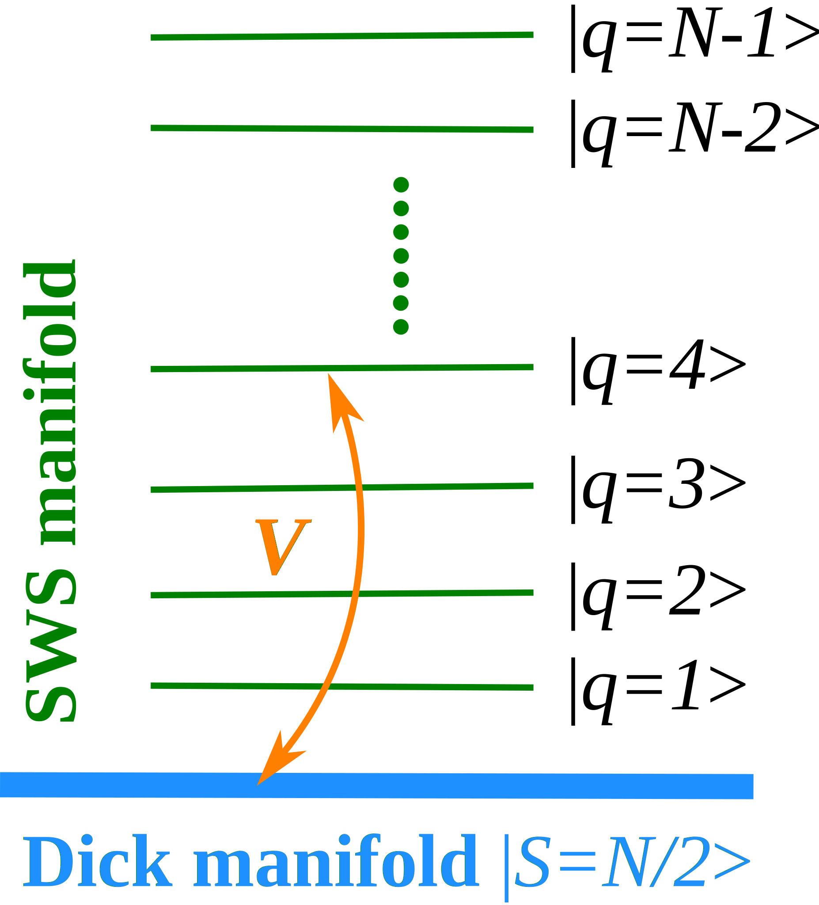

Lower total spin is detrimental for squeezing:

`$\xi^2 = \frac{N\left(\Delta S_{\perp}\right)_\mathrm{min}^2 }{\langle \hat{S}\rangle^2}$`
</div>

</script></section><section  data-markdown><script type="text/template">
### Back to our Spin Hamiltonian

<div>

`
$$
\begin{align*}
\hat{H}_\mathrm{SE} \left|\frac{N}{2}, m\right> =& E_0  \left|\frac{N}{2}, m\right>,\\
\hat{H}_{\uparrow\downarrow} \left|\frac{N}{2}, m\right> =& J_{\uparrow\downarrow}\Big( \left|q = \phi, m- 1\right>^+ \\
							  & +\left|q = \phi, m + 1\right>^-\Big),\\
\hat{H}_\mathrm{SE}\left|q,m\right>^\pm =& J_\mathrm{SE}\left(1-\cos q\right)\left|q,m\right>^\pm.
\end{align*}
$$
`

</div>


</script></section><section  data-markdown><script type="text/template">### Second SW approximation 

$J_{\uparrow\downarrow} \ll J_\mathrm{SE}(1-\cos\phi)$

<div class="reveal" style="font-size:.6em;">
$$
\hat{H}_{\rm eff}^{(2)} =
\begin{cases}
\begin{aligned} - \chi_{\pi} \hat{S}_x^2,\ &\mathrm{with}\ \chi_{\pi} = \frac{1}{2}\frac{ J_{\uparrow\downarrow}^2}{J_\mathrm{SE}}\frac{1}{N-1}\ \mathrm{when}\ (\phi = \pi),\\
  \chi_\phi  \hat{S}_z^2,\ &\mathrm{with}\ \chi_{\phi} = \frac{1}{2(1-\cos\phi)}\frac{ J_{\uparrow\downarrow}^2}{J_\mathrm{SE}}\frac{1}{N-1}\ \mathrm{when}\  (\phi\ne\pi).
\end{aligned}
\end{cases}
$$
</div>
</script></section><section  data-markdown><script type="text/template">### Results comparing the three models

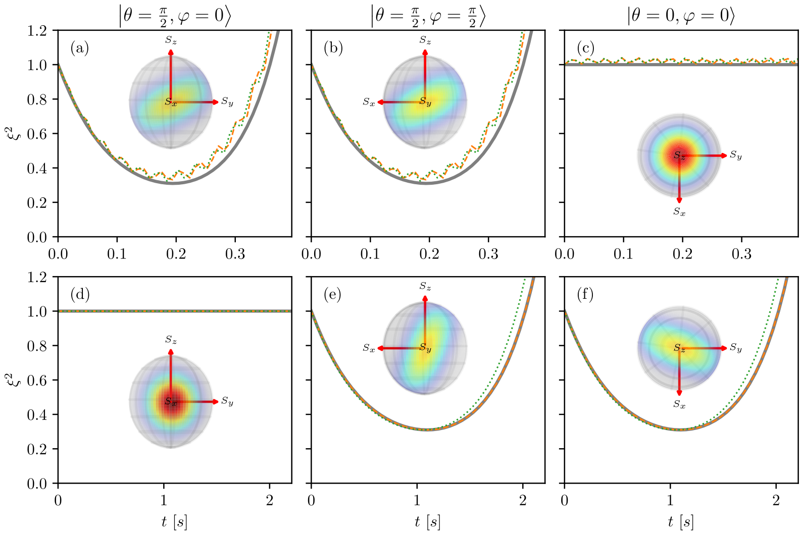

<div style="font-size:.5em">

`$N=10, U=1/E_R, J = rU, \Omega = r^3 U, r = \frac{1}{10}, \phi = \pi/5, \pi$`

</div>
</script></section><section  data-markdown><script type="text/template">### What about two laser beams? 

`
$$
\begin{align}
\hat{H} &= \hat{H}_\mathrm{FHM}  + \hat{H}_{\rm L}(\pi) + \hat{H}_{\rm L}(\phi_1) ,\\
&\approx \hat{H}_\mathrm{SE} + \hat{H}_{\uparrow\downarrow}(\pi) + \hat{H}_{\uparrow\downarrow}(\phi_1) ,\\
&\approx -\chi_\pi\hat{S}^2_x + \chi_{\phi_1}\hat{S}_z^2
\end{align}
$$
`
</script></section><section  data-markdown><script type="text/template">### What about two laser beams? 

## TACT!

`$$
\hat{H}_{\rm eff} = \chi_{\phi_1}\left( \hat{S}_{z}^{2}-\frac{\chi_{\pi}}{\chi_{\phi_{1}}}\hat{S}_{x}^{2}\right)\,,\label{eq:TACT}
$$`


<aside class="notes"><ul>
<li>Show how to get TACT model</li>
<li>Expected improvement with TACT over OAT</li>
</ul>
</aside></script></section><section  data-markdown><script type="text/template">### Compare different boundary conditions - OAT

<!---->

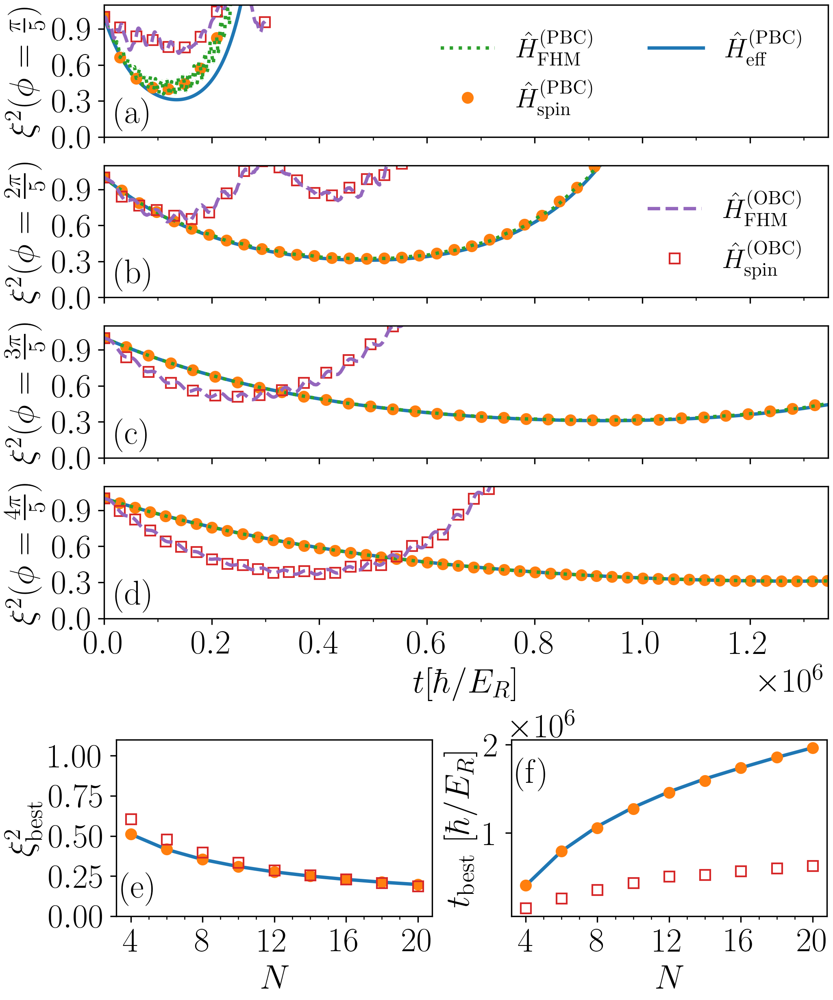
</script></section><section  data-markdown><script type="text/template">### Compare different boundary conditions - TACT

</script></section><section  data-markdown><script type="text/template">### Summary

- Squeezing as a means to measure precision
- OAT improves on SQL and TACT is capable of reaching HL
- FHM + Atom-light coupling simulates OAT and TACT in a certain regime of parameters (Mott)
- OBC apparently provides improvement over PBC in terms of squeezing level and time
</script></section><section  data-markdown><script type="text/template">### Outlook

- Study the system for OBC (*writing*)
- Introduce other sources of non-linearity as dipolar interactions
- Sources of decoherence on the system
</script></section><section  data-markdown><script type="text/template">
# Thank you

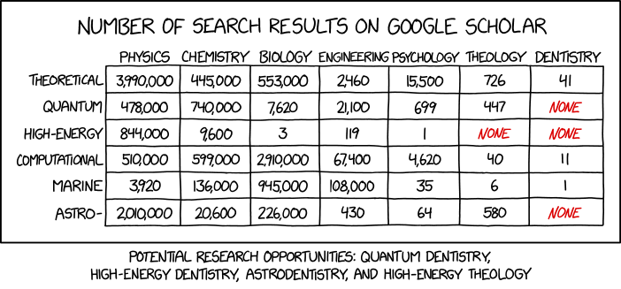

source: [xkcd.com](https://m.xkcd.com/2656/)

  


</script></section></div>
    </div>

    <script src="./dist/reveal.js"></script>

    <script src="./plugin/markdown/markdown.js"></script>
    <script src="./plugin/highlight/highlight.js"></script>
    <script src="./plugin/zoom/zoom.js"></script>
    <script src="./plugin/notes/notes.js"></script>
    <script src="./plugin/math/math.js"></script>
    <script>
      function extend() {
        var target = {};
        for (var i = 0; i < arguments.length; i++) {
          var source = arguments[i];
          for (var key in source) {
            if (source.hasOwnProperty(key)) {
              target[key] = source[key];
            }
          }
        }
        return target;
      }

      // default options to init reveal.js
      var defaultOptions = {
        controls: true,
        progress: true,
        history: true,
        center: true,
        transition: 'default', // none/fade/slide/convex/concave/zoom
        plugins: [
          RevealMarkdown,
          RevealHighlight,
          RevealZoom,
          RevealNotes,
          RevealMath
        ]
      };

      // options from URL query string
      var queryOptions = Reveal().getQueryHash() || {};

      var options = extend(defaultOptions, {"transition":"fade","<!--center":"false-->","<!--showNotes":"true-->"}, queryOptions);
    </script>


    <script>
      Reveal.initialize(options);
    </script>
  </body>
</html>
